速览
挥剑等时留下的轨迹叫风切（Blade Trail）。以前一直这么叫，但也许没有广泛使用的名称，这里就叫风切。挥剑时出现的残像在 2D 游戏中也被大量使用，但 2D 和 3D 做法差别很大。《大乱斗》剑当然有风切，但拳脚等攻击也作为模糊的延伸加入了类似风切的东西。剑的风切做法大分两种。一种是沿剑经过的轨迹生成多边形，大多是这种：想象一把扇子就好懂——剑的位置是扇骨边缘，落后的位置画出多边形；尾端多半做成半透明，表现倏地消失。剑速快，单纯追轨迹容易变粗糙；而且从侧面看的画面中可能几乎看不见，所以为了更好地表现风切，也经常修改动作——大多数情况，单纯水平斩并不好。另一种是放置板多边形，数量较少，可用于更高速、1 帧就挥完的剑：挥完的瞬间剑已挥出，风切只显示一瞬间，是一枚板多边形；虽然只显示一瞬，但命中会有顿帧，所以能看到。同样是挥剑，风切的表现各种各样：露琪娜是比较标准的蓝色风切；马尔斯因剑尖强的特性，强调刃边；艾克表现豪剑，比较粗犷；儿童林克相当粗糙，比起锋利更像「打」的类型；彼特的刀身是两色，配色据此；修尔克有点像电子刀；贝优妮塔也相当有风切的笔触；焰为了表现燃烧感带有火焰残像；Mii 剑术型按武器每次重做；特拉维斯是光束刀，去掉倏地消失的印象，提高发光体的印象。实际做过就知道难处，尤其 3D 包括调整动作都很费工；但风切确实重要：没有的话手感完全不同，做好时效果也大。
1. 什么是风切 0:03
挥剑等时留下的轨迹叫风切。以前一直这么叫，但也许没有广泛使用的名称，这里就叫风切。
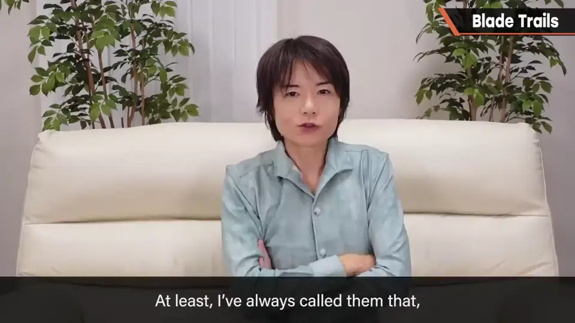
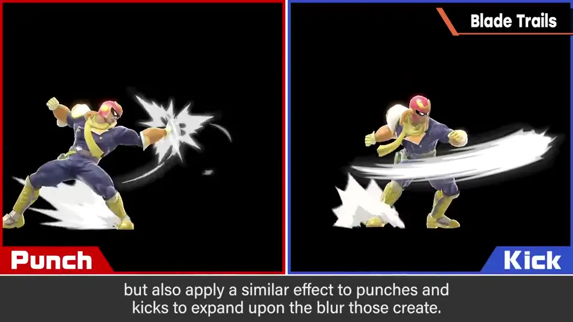
挥剑出现的残像在 2D 游戏中也被大量使用，但 2D 和 3D 做法差别很大。《大乱斗》中拳脚等攻击也作为模糊的延伸加入了类似风切的东西。
2. 做法一：沿轨迹生成 0:44
剑的风切做法大分两种。一种是沿剑经过的轨迹生成多边形，大多是这种。
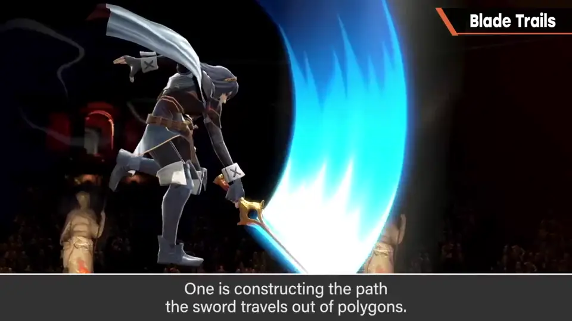
想象一把扇子就好懂：剑的位置是扇骨边缘，落后的位置画出多边形。尾端多半做成半透明，表现倏地消失。
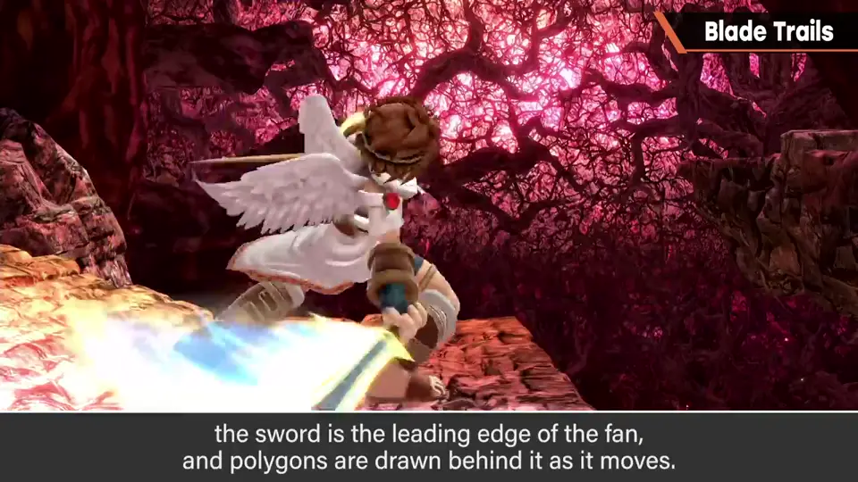
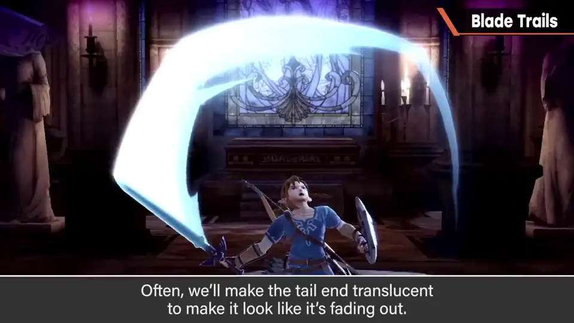
3. 侧面看不见 1:12
剑速快，单纯追轨迹容易变粗糙；从侧面看的画面中还可能几乎看不见。
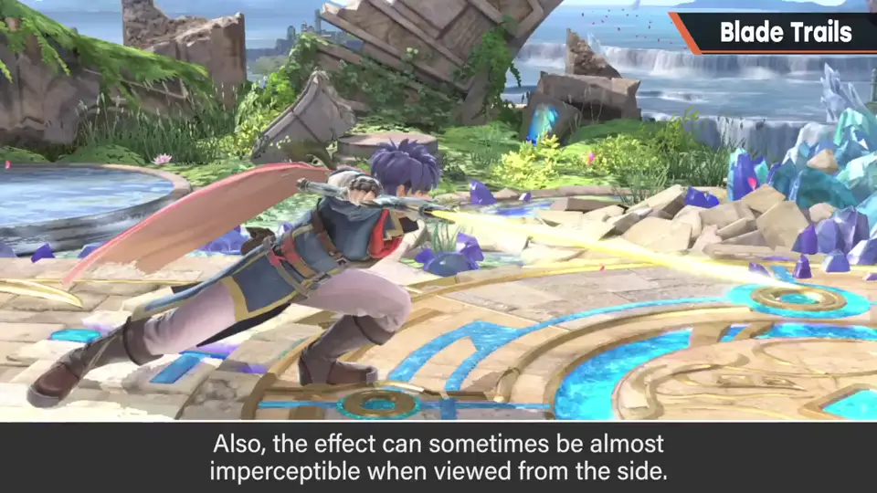
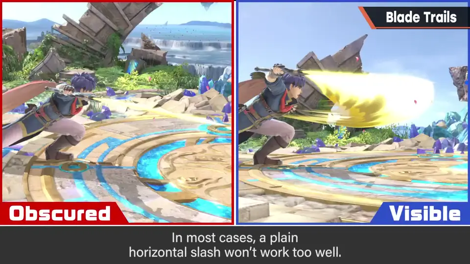
4. 做法二：板多边形 1:36
另一种是放置板多边形，数量较少，可用于更高速、1 帧就挥完的剑。
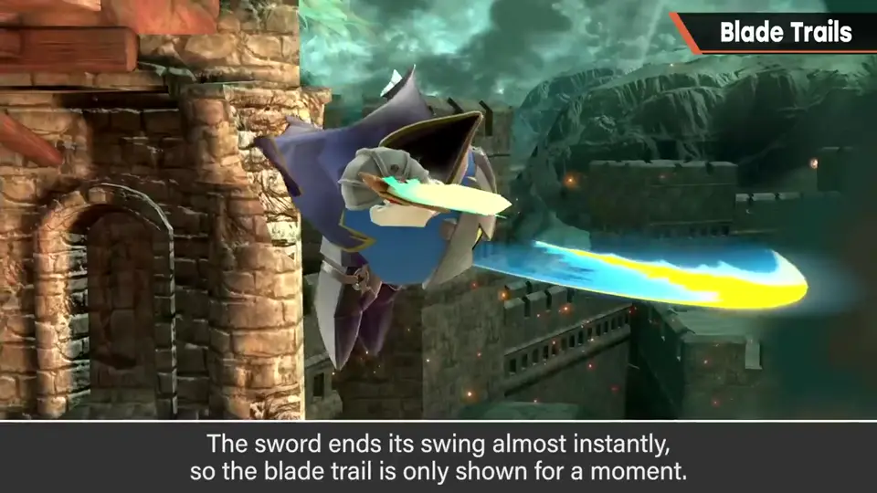
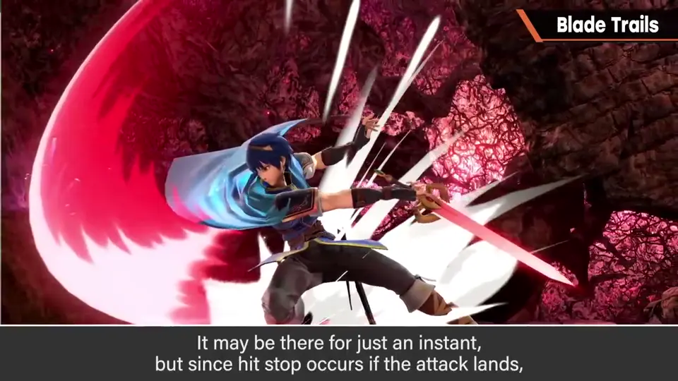
5. 各角色的风切 2:04
| 角色 | 风切特点 |
|---|---|
| 露琪娜 | 比较标准的蓝色风切 |
| 马尔斯 | 剑尖强 → 强调刃边 |
| 艾克 | 表现豪剑，粗犷 |
| 儿童林克 | 粗糙，偏「打」而非锋利 |
| 彼特 | 刀身两色，配色据此 |
| 修尔克 | 有点像电子刀 |
| 贝优妮塔 | 相当有风切笔触 |
| 焰 | 带火焰残像，表现燃烧 |
| Mii 剑术型 | 按武器每次重做 |
| 特拉维斯 | 光束刀：去掉消散感，强调发光体 |
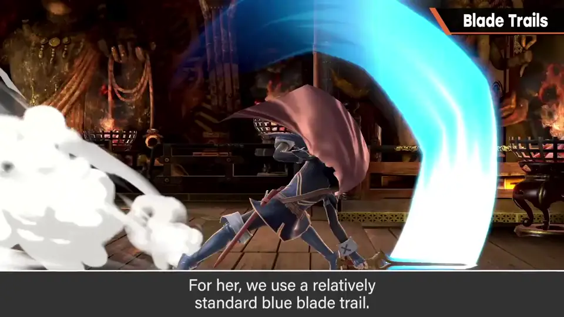
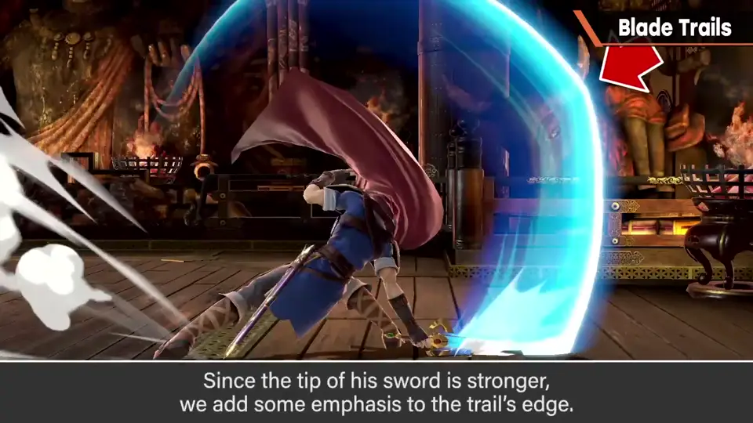
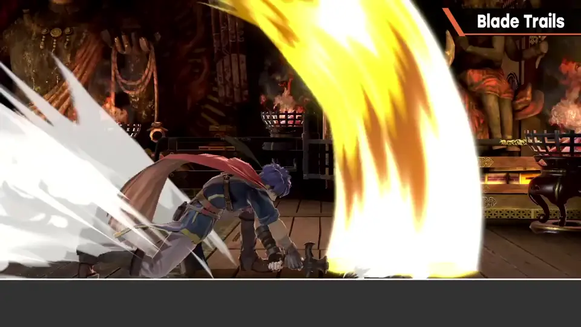
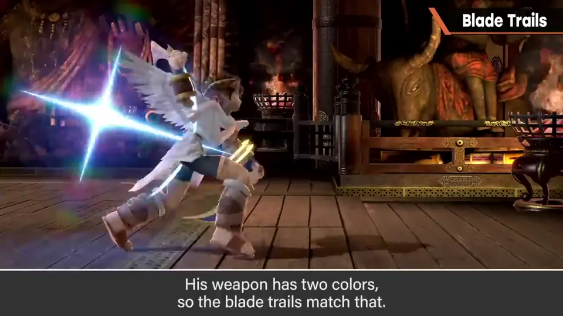
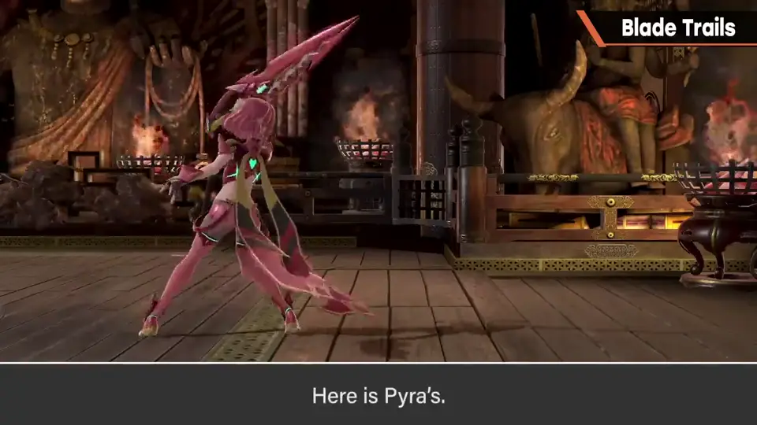
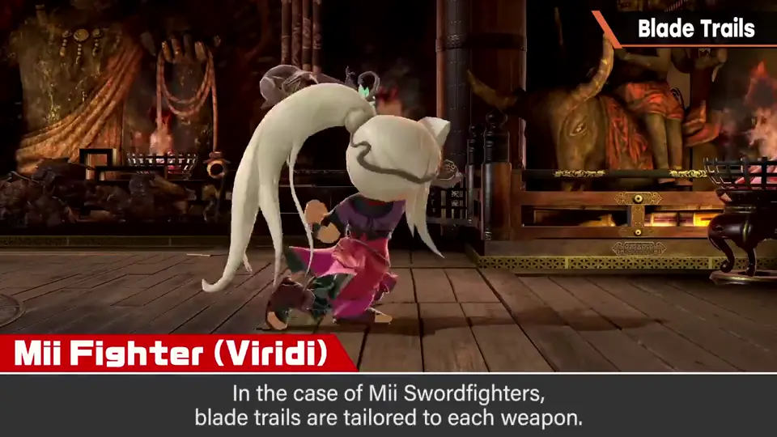
6. 风切很重要 3:30
实际做过就知道难处，尤其 3D 包括调整动作都很费工。
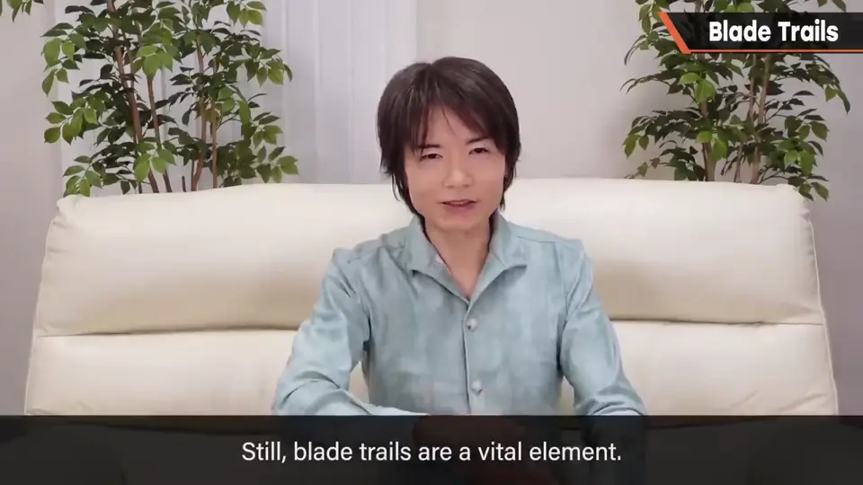
自测题
1. 剑的风切两种做法是什么？
沿剑轨迹生成多边形（扇形，大多数）；放置一枚板多边形瞬间显示（1 帧挥完时）。 0:50
2. 为什么经常要为风切修改动作？
侧面看的画面中水平斩的轨迹几乎看不见。 1:25
3. 板多边形的风切只显示一瞬，为什么还能被看到？
命中时有顿帧。 2:00